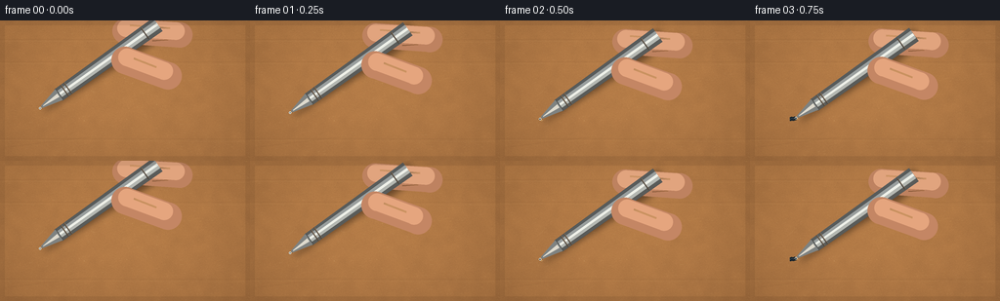
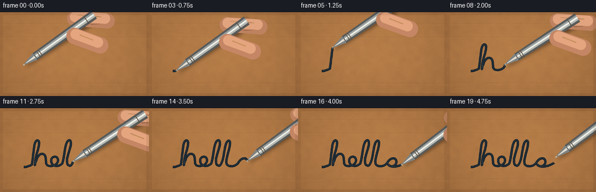

CODING AGENTS AS PIXEL WORLD MODELS
traex/GPT-5.6-Sol · mechanics_0047
点击播放 · 原生 RGB 像素
逐轮保存的候选
回放视频、检查图与代码变化。
每份候选均可单独播放。实际图片检查记录在下方工具轨迹中。
候选 01播放与检查图
点击播放 · 原生 RGB 像素


展开代码变化
--- 上一保存版本
+++ 本次保存版本
@@ -0,0 +1,202 @@
+from pathlib import Path
+import math
+import numpy as np
+from PIL import Image, ImageDraw, ImageFilter
+import artifact_io
+
+W,H,N,S = 256,144,20,4
+SS=4
+rng=np.random.default_rng(4701)
+
+def cubic(p0,p1,p2,p3,n=18):
+ t=np.linspace(0,1,n,endpoint=False)[:,None]
+ a=np.array(p0); b=np.array(p1); c=np.array(p2); d=np.array(p3)
+ return ((1-t)**3*a+3*(1-t)**2*t*b+3*(1-t)*t*t*c+t**3*d)
+
+def line(a,b,n=12):
+ return np.linspace(a,b,n,endpoint=False)
+
+# A single connected, genuinely handwritten centerline spelling "hello".
+parts=[]
+def C(a,b,c,d,n=16): parts.append(cubic(a,b,c,d,n))
+def L(a,b,n=10): parts.append(line(a,b,n))
+C((41,101),(46,101),(51,99),(55,97),10) # lead-in
+L((55,97),(59,64),18)
+C((59,64),(61,53),(68,52),(67,62),13) # top of h
+C((67,62),(66,73),(60,82),(60,98),16)
+C((60,98),(63,83),(69,76),(75,79),14) # h shoulder
+C((75,79),(82,83),(75,98),(84,99),15)
+C((84,99),(92,101),(103,94),(99,86),15) # e loop
+C((99,86),(95,80),(86,85),(88,92),14)
+C((88,92),(90,101),(101,101),(107,95),15)
+C((107,95),(111,83),(111,64),(116,57),15) # first l
+C((116,57),(121,51),(124,58),(120,70),14)
+C((120,70),(116,82),(111,97),(120,99),17)
+C((120,99),(126,98),(128,83),(131,66),15) # second l
+C((131,66),(134,53),(140,53),(139,62),14)
+C((139,62),(138,75),(127,96),(137,99),18)
+C((137,99),(144,101),(151,98),(154,93),11) # o
+C((154,93),(159,84),(168,84),(169,91),14)
+C((169,91),(170,99),(160,103),(155,97),14)
+C((155,97),(161,103),(174,100),(184,94),18) # exit flourish
+path=np.vstack(parts+[np.array([[184.,94.]])])
+# Re-sample by arc length for a constant physical writing speed.
+d=np.sqrt(((path[1:]-path[:-1])**2).sum(1)); cum=np.r_[0,np.cumsum(d)]
+arc=np.linspace(0,cum[-1],900)
+path=np.c_[np.interp(arc,cum,path[:,0]),np.interp(arc,cum,path[:,1])]
+
+# Macro cardboard plate; fixed in every frame for perfect temporal coherence.
+w,h=W*SS,H*SS
+Y,X=np.mgrid[0:h,0:w]
+low=Image.fromarray(rng.integers(0,256,(36,64),dtype=np.uint8)).resize((w,h),Image.Resampling.BICUBIC).filter(ImageFilter.GaussianBlur(13))
+lowarr=(np.asarray(low).astype(float)-128)/18
+fine=rng.normal(0,1.0,(h,w))*4.6
+# warm kraft color under a broad soft studio light
+light=17*np.exp(-(((X-w*.50)/(w*.64))**2+((Y-h*.40)/(h*.80))**2))
+vign=-14*(((X-w/2)/(w*.74))**2+((Y-h/2)/(h*.9))**2)
+base=np.empty((h,w,3),float)
+base[:,:,0]=164+lowarr+fine+light+vign
+base[:,:,1]=112+lowarr*.74+fine*.78+light*.72+vign*.77
+base[:,:,2]=65+lowarr*.42+fine*.48+light*.38+vign*.55
+base=np.uint8(np.clip(base,0,255))
+cardboard=Image.fromarray(base,'RGB')
+draw=ImageDraw.Draw(cardboard,'RGBA')
+# broad horizontal corrugation impressions and a few shallow scuffs
+for yy in [19,42,121]:
+ y=int(yy*SS)
+ draw.line([(0,y),(w,y+int(.7*SS))],fill=(94,58,30,20),width=1*SS)
+ draw.line([(0,y+2*SS),(w,y+3*SS)],fill=(232,188,120,13),width=1*SS)
+# Thousands of paper fibers: short tan/dark splinters with mostly horizontal grain.
+for i in range(2100):
+ x=int(rng.uniform(0,w)); y=int(rng.uniform(0,h))
+ leng=rng.uniform(.35,2.6)*SS
+ ang=rng.normal(0,0.23)
+ col=(232,196,137,int(rng.integers(16,47))) if rng.random()<.57 else (79,51,29,int(rng.integers(10,35)))
+ draw.line((x,y,x+math.cos(ang)*leng,y+math.sin(ang)*leng),fill=col,width=max(1,int(rng.uniform(.15,.48)*SS)))
+# rough worn patch under the word
+for i in range(95):
+ x=rng.uniform(34,192)*SS; y=rng.uniform(51,108)*SS
+ if rng.random()<.65:
+ draw.ellipse((x,y,x+rng.uniform(.25,1)*SS,y+rng.uniform(.2,.65)*SS),fill=(238,200,136,int(rng.integers(22,58))))
+# shallow diagonal box abrasion, far background
+for off in range(3):
+ draw.line([(4*SS,(130+off*.45)*SS),(95*SS,(119+off*.45)*SS)],fill=(91,57,28,17),width=1)
+
+# fixed per-point ink imperfections and width modulation
+ink_jit=rng.normal(0,.13,(len(path),2))
+ink_pts=path+ink_jit
+
+def capsule(draw,a,b,r,fill,outline=None,width=1):
+ ax,ay=a; bx,by=b
+ vx=bx-ax; vy=by-ay; L=max(1,math.hypot(vx,vy)); nx=-vy/L; ny=vx/L
+ poly=[((ax+nx*r)*SS,(ay+ny*r)*SS),((bx+nx*r)*SS,(by+ny*r)*SS),((bx-nx*r)*SS,(by-ny*r)*SS),((ax-nx*r)*SS,(ay-ny*r)*SS)]
+ draw.polygon(poly,fill=fill)
+ draw.ellipse(((ax-r)*SS,(ay-r)*SS,(ax+r)*SS,(ay+r)*SS),fill=fill)
+ draw.ellipse(((bx-r)*SS,(by-r)*SS,(bx+r)*SS,(by+r)*SS),fill=fill)
+
+def draw_ink(im,count,wet=False):
+ if count<2:return
+ dr=ImageDraw.Draw(im,'RGBA')
+ pts=[(float(x*SS),float(y*SS)) for x,y in ink_pts[:count]]
+ # Slight absorbed edge, then dense blue-black ballpoint core.
+ dr.line(pts,fill=(27,38,45,55),width=4*SS,joint='curve')
+ dr.line(pts,fill=(17,30,42,235),width=2*SS,joint='curve')
+ dr.line([(x,y-0.18*SS) for x,y in pts],fill=(69,82,88,95),width=max(1,SS//2),joint='curve')
+ # tiny misses caused by fibers: cardboard-colored dashes crossing the ink
+ start=max(8,count-260)
+ for k in range(start,count,47):
+ if k+1<count:
+ x,y=ink_pts[k]
+ dr.line(((x-.45)*SS,(y-.5)*SS,(x+.55)*SS,(y+.45)*SS),fill=(153,101,57,105),width=1)
+ if wet:
+ for k in range(max(0,count-22),count,6):
+ x,y=ink_pts[k]
+ dr.ellipse(((x-.3)*SS,(y-.35)*SS,(x+.35)*SS,(y+.3)*SS),fill=(66,84,96,145))
+
+def poly_band(dr,point,dvec,nvec,a,b,r1,r2,fill):
+ px,py=point; dx,dy=dvec; nx,ny=nvec
+ coords=[]
+ for q,r in [(a,r1),(b,r2)]: coords.append(((px+dx*q+nx*r)*SS,(py+dy*q+ny*r)*SS))
+ for q,r in [(b,-r2),(a,-r1)]: coords.append(((px+dx*q+nx*r)*SS,(py+dy*q+ny*r)*SS))
+ dr.polygon(coords,fill=fill)
+
+def draw_pen_and_hand(im,tip,angle,lift,frame):
+ # d points from tip up along the pen toward upper-right.
+ dx,dy=math.cos(angle),math.sin(angle); nx,ny=-dy,dx
+ px,py=tip
+ layer=Image.new('RGBA',(w,h),(0,0,0,0)); dr=ImageDraw.Draw(layer,'RGBA')
+ # diffuse cast shadow - separates metal and rough paper
+ sh=Image.new('RGBA',(w,h),(0,0,0,0)); sd=ImageDraw.Draw(sh,'RGBA')
+ poly_band(sd,(px+2.5,py+4.2),(dx,dy),(nx,ny),3,151,1.1,9.2,(41,25,14,135))
+ sh=sh.filter(ImageFilter.GaussianBlur(3.2*SS))
+ im.alpha_composite(sh)
+ # rear index finger, softly gripping at the high end
+ grip=(px+dx*112,py+dy*112)
+ capsule(dr,(grip[0]-4,grip[1]-14),(grip[0]+52,grip[1]-10),13,(190,130,96,255))
+ capsule(dr,(grip[0]-3,grip[1]-17),(grip[0]+48,grip[1]-14),9,(225,164,126,255))
+ # index highlight and crease
+ dr.line(((grip[0]+1)*SS,(grip[1]-20)*SS,(grip[0]+42)*SS,(grip[1]-17)*SS),fill=(248,190,148,105),width=2*SS)
+ dr.line(((grip[0]+24)*SS,(grip[1]-4)*SS,(grip[0]+40)*SS,(grip[1]-5)*SS),fill=(130,78,59,70),width=1*SS)
+ # metallic barrel outline; tapered nose and barrel are distinct.
+ poly_band(dr,(px,py),(dx,dy),(nx,ny),23,148,7.0,8.4,(77,78,75,255))
+ # longitudinal metal bands create cylindrical reflectivity
+ bands=[(-7,-4.1,(87,91,91,255)),(-4.1,-1.4,(154,159,158,255)),(-1.4,1.0,(239,241,233,255)),(1.0,3.8,(181,184,178,255)),(3.8,7,(89,91,89,255))]
+ for lo,hi,col in bands:
+ coords=[((px+dx*25+nx*lo)*SS,(py+dy*25+ny*lo)*SS),((px+dx*148+nx*lo*1.17)*SS,(py+dy*148+ny*lo*1.17)*SS),((px+dx*148+nx*hi*1.17)*SS,(py+dy*148+ny*hi*1.17)*SS),((px+dx*25+nx*hi)*SS,(py+dy*25+ny*hi)*SS)]
+ dr.polygon(coords,fill=col)
+ # subtle engraving and grip rings
+ for dist in [31,35,132]:
+ ax=px+dx*dist; ay=py+dy*dist
+ dr.line(((ax+nx*7.1)*SS,(ay+ny*7.1)*SS,(ax-nx*7.1)*SS,(ay-ny*7.1)*SS),fill=(62,64,63,190),width=1*SS)
+ dr.line(((ax+dx*.7+nx*6.7)*SS,(ay+dy*.7+ny*6.7)*SS,(ax+dx*.7-nx*6.7)*SS,(ay+dy*.7-ny*6.7)*SS),fill=(242,244,236,80),width=1)
+ # conical stainless nib
+ poly_band(dr,(px,py),(dx,dy),(nx,ny),2,24,1.15,6.7,(126,130,129,255))
+ poly_band(dr,(px,py),(dx,dy),(nx,ny),4,23,.35,2.0,(235,239,232,215))
+ # ballpoint and dark ink at contact
+ dr.ellipse(((px-1.25)*SS,(py-1.25)*SS,(px+1.25)*SS,(py+1.25)*SS),fill=(39,43,43,255),outline=(205,209,201,255),width=1*SS)
+ if lift<1.5:
+ dr.ellipse(((px-.55)*SS,(py-.25)*SS,(px+.55)*SS,(py+.65)*SS),fill=(15,28,39,245))
+ # foreground thumb wrapping under the barrel
+ thumb=(grip[0]-7,grip[1]+12)
+ capsule(dr,(thumb[0]+3,thumb[1]+4),(thumb[0]+47,thumb[1]+20),14,(196,134,100,255))
+ capsule(dr,(thumb[0]+5,thumb[1]+1),(thumb[0]+43,thumb[1]+15),9,(229,165,126,255))
+ dr.line(((thumb[0]+12)*SS,(thumb[1]+2)*SS,(thumb[0]+35)*SS,(thumb[1]+11)*SS),fill=(249,196,153,80),width=2*SS)
+ im.alpha_composite(layer)
+
+frames=[]
+for f in range(N):
+ canvas=cardboard.convert('RGBA')
+ # Frames 0-1 approach. Frames 2-17 write; 18-19 lift away.
+ if f<2:
+ prog=0.0; lift=(2-f)*4.6+1.8
+ elif f<=17:
+ u=(f-2)/15
+ # near-linear speed with gentle acceleration/deceleration
+ prog=u*u*(3-2*u)
+ lift=0.0
+ else:
+ prog=1.0; lift=(f-17)*5.2
+ count=max(1,int(prog*(len(path)-1))+1)
+ draw_ink(canvas,count,wet=(2<=f<=17))
+ p=path[count-1].copy()
+ # nib rises up-screen when lifted, with a tiny rightward follow-through
+ p[0]+=max(0,f-17)*1.8
+ p[1]-=lift
+ # hand-written wrist angle changes subtly over the sweep
+ angle=-0.62 + 0.06*math.sin(prog*math.pi) - 0.025*prog
+ # paper fibers being scraped just ahead of the ball emphasize friction
+ if 2<=f<=17:
+ dr=ImageDraw.Draw(canvas,'RGBA')
+ tx,ty=p
+ for j in range(5):
+ rr=np.random.default_rng(9000+f*17+j)
+ ox=rr.uniform(-1.2,2.4); oy=rr.uniform(.6,2.2)
+ dr.line(((tx+ox)*SS,(ty+oy)*SS,(tx+ox+rr.uniform(.6,1.8))*SS,(ty+oy+rr.uniform(-.3,.4))*SS),fill=(224,184,119,145),width=max(1,SS//2))
+ draw_pen_and_hand(canvas,p,angle,lift,f)
+ # restrained depth-of-field at extreme image corners via translucent vignette
+ ov=Image.new('RGBA',(w,h),(0,0,0,0)); od=ImageDraw.Draw(ov,'RGBA')
+ od.rectangle((0,0,w,h),outline=(47,27,14,22),width=5*SS)
+ canvas=Image.alpha_composite(canvas,ov).convert('RGB').resize((W,H),Image.Resampling.LANCZOS)
+ frames.append(np.asarray(canvas,dtype=np.uint8))
+
+artifact_io.save(np.stack(frames),Path(__file__).resolve().parent)
可观测工具轨迹
实际执行的命令与返回图片。
命令 1exit 0
/bin/bash -lc "cat prompt.txt && printf '\\n---RULES---\\n' && cat GENERATION_RULES.md && printf '\\n---SPEC---\\n' && cat task_spec.json"
命令 2exit 0
/bin/bash -lc "find . -maxdepth 2 -type f -printf '%p %s bytes\\n' | sort"
命令 3exit 0
/bin/bash -lc "sed -n '1,240p' artifact_io.py"
命令 4exit 0
/bin/bash -lc "cat > generate.py <<'PY'
from pathlib import Path
import math
import numpy as np
from PIL import Image, ImageDraw, ImageFilter
import artifact_io
W,H,N,S = 256,144,20,4
SS=4
rng=np.random.default_rng(4701)
def cubic(p0,p1,p2,p3,n=18):
t=np.linspace(0,1,n,endpoint=False)[:,None]
a=np.array(p0); b=np.array(p1); c=np.array(p2); d=np.array(p3)
return ((1-t)**3*a+3*(1-t)**2*t*b+3*(1-t)*t*t*c+t**3*d)
def line(a,b,n=12):
return np.linspace(a,b,n,endpoint=False)
# A single connected, genuinely handwritten centerline spelling \"hello\".
parts=[]
def C(a,b,c,d,n=16): parts.append(cubic(a,b,c,d,n))
def L(a,b,n=10): parts.append(line(a,b,n))
C((41,101),(46,101),(51,99),(55,97),10) # lead-in
L((55,97),(59,64),18)
C((59,64),(61,53),(68,52),(67,62),13) # top of h
C((67,62),(66,73),(60,82),(60,98),16)
C((60,98),(63,83),(69,76),(75,79),14) # h shoulder
C((75,79),(82,83),(75,98),(84,99),15)
C((84,99),(92,101),(103,94),(99,86),15) # e loop
C((99,86),(95,80),(86,85),(88,92),14)
C((88,92),(90,101),(101,101),(107,95),15)
C((107,95),(111,83),(111,64),(116,57),15) # first l
C((116,57),(121,51),(124,58),(120,70),14)
C((120,70),(116,82),(111,97),(120,99),17)
C((120,99),(126,98),(128,83),(131,66),15) # second l
C((131,66),(134,53),(140,53),(139,62),14)
C((139,62),(138,75),(127,96),(137,99),18)
C((137,99),(144,101),(151,98),(154,93),11) # o
C((154,93),(159,84),(168,84),(169,91),14)
C((169,91),(170,99),(160,103),(155,97),14)
C((155,97),(161,103),(174,100),(184,94),18) # exit flourish
path=np.vstack(parts+[np.array([[184.,94.]])])
# Re-sample by arc length for a constant physical writing speed.
d=np.sqrt(((path[1:]-path[:-1])**2).sum(1)); cum=np.r_[0,np.cumsum(d)]
arc=np.linspace(0,cum[-1],900)
path=np.c_[np.interp(arc,cum,path[:,0]),np.interp(arc,cum,path[:,1])]
# Macro cardboard plate; fixed in every frame for perfect temporal coherence.
w,h=W*SS,H*SS
Y,X=np.mgrid[0:h,0:w]
low=Image.fromarray(rng.integers(0,256,(36,64),dtype=np.uint8)).resize((w,h),Image.Resampling.BICUBIC).filter(ImageFilter.GaussianBlur(13))
lowarr=(np.asarray(low).astype(float)-128)/18
fine=rng.normal(0,1.0,(h,w))*4.6
# warm kraft color under a broad soft studio light
light=17*np.exp(-(((X-w*.50)/(w*.64))**2+((Y-h*.40)/(h*.80))**2))
vign=-14*(((X-w/2)/(w*.74))**2+((Y-h/2)/(h*.9))**2)
base=np.empty((h,w,3),float)
base[:,:,0]=164+lowarr+fine+light+vign
base[:,:,1]=112+lowarr*.74+fine*.78+light*.72+vign*.77
base[:,:,2]=65+lowarr*.42+fine*.48+light*.38+vign*.55
base=np.uint8(np.clip(base,0,255))
cardboard=Image.fromarray(base,'RGB')
draw=ImageDraw.Draw(cardboard,'RGBA')
# broad horizontal corrugation impressions and a few shallow scuffs
for yy in [19,42,121]:
y=int(yy*SS)
draw.line([(0,y),(w,y+int(.7*SS))],fill=(94,58,30,20),width=1*SS)
draw.line([(0,y+2*SS),(w,y+3*SS)],fill=(232,188,120,13),width=1*SS)
# Thousands of paper fibers: short tan/dark splinters with mostly horizontal grain.
for i in range(2100):
x=int(rng.uniform(0,w)); y=int(rng.uniform(0,h))
leng=rng.uniform(.35,2.6)*SS
ang=rng.normal(0,0.23)
col=(232,196,137,int(rng.integers(16,47))) if rng.random()<.57 else (79,51,29,int(rng.integers(10,35)))
draw.line((x,y,x+math.cos(ang)*leng,y+math.sin(ang)*leng),fill=col,width=max(1,int(rng.uniform(.15,.48)*SS)))
# rough worn patch under the word
for i in range(95):
x=rng.uniform(34,192)*SS; y=rng.uniform(51,108)*SS
if rng.random()<.65:
draw.ellipse((x,y,x+rng.uniform(.25,1)*SS,y+rng.uniform(.2,.65)*SS),fill=(238,200,136,int(rng.integers(22,58))))
# shallow diagonal box abrasion, far background
for off in range(3):
draw.line([(4*SS,(130+off*.45)*SS),(95*SS,(119+off*.45)*SS)],fill=(91,57,28,17),width=1)
# fixed per-point ink imperfections and width modulation
ink_jit=rng.normal(0,.13,(len(path),2))
ink_pts=path+ink_jit
def capsule(draw,a,b,r,fill,outline=None,width=1):
ax,ay=a; bx,by=b
vx=bx-ax; vy=by-ay; L=max(1,math.hypot(vx,vy)); nx=-vy/L; ny=vx/L
poly=[((ax+nx*r)*SS,(ay+ny*r)*SS),((bx+nx*r)*SS,(by+ny*r)*SS),((bx-nx*r)*SS,(by-ny*r)*SS),((ax-nx*r)*SS,(ay-ny*r)*SS)]
draw.polygon(poly,fill=fill)
draw.ellipse(((ax-r)*SS,(ay-r)*SS,(ax+r)*SS,(ay+r)*SS),fill=fill)
draw.ellipse(((bx-r)*SS,(by-r)*SS,(bx+r)*SS,(by+r)*SS),fill=fill)
def draw_ink(im,count,wet=False):
if count<2:return
dr=ImageDraw.Draw(im,'RGBA')
pts=[(float(x*SS),float(y*SS)) for x,y in ink_pts[:count]]
# Slight absorbed edge, then dense blue-black ballpoint core.
dr.line(pts,fill=(27,38,45,55),width=4*SS,joint='curve')
dr.line(pts,fill=(17,30,42,235),width=2*SS,joint='curve')
dr.line([(x,y-0.18*SS) for x,y in pts],fill=(69,82,88,95),width=max(1,SS//2),joint='curve')
# tiny misses caused by fibers: cardboard-colored dashes crossing the ink
start=max(8,count-260)
for k in range(start,count,47):
if k+1<count:
x,y=ink_pts[k]
dr.line(((x-.45)*SS,(y-.5)*SS,(x+.55)*SS,(y+.45)*SS),fill=(153,101,57,105),width=1)
if wet:
for k in range(max(0,count-22),count,6):
x,y=ink_pts[k]
dr.ellipse(((x-.3)*SS,(y-.35)*SS,(x+.35)*SS,(y+.3)*SS),fill=(66,84,96,145))
def poly_band(dr,point,dvec,nvec,a,b,r1,r2,fill):
px,py=point; dx,dy=dvec; nx,ny=nvec
coords=[]
for q,r in [(a,r1),(b,r2)]: coords.append(((px+dx*q+nx*r)*SS,(py+dy*q+ny*r)*SS))
for q,r in [(b,-r2),(a,-r1)]: coords.append(((px+dx*q+nx*r)*SS,(py+dy*q+ny*r)*SS))
dr.polygon(coords,fill=fill)
def draw_pen_and_hand(im,tip,angle,lift,frame):
# d points from tip up along the pen toward upper-right.
dx,dy=math.cos(angle),math.sin(angle); nx,ny=-dy,dx
px,py=tip
layer=Image.new('RGBA',(w,h),(0,0,0,0)); dr=ImageDraw.Draw(layer,'RGBA')
# diffuse cast shadow - separates metal and rough paper
sh=Image.new('RGBA',(w,h),(0,0,0,0)); sd=ImageDraw.Draw(sh,'RGBA')
poly_band(sd,(px+2.5,py+4.2),(dx,dy),(nx,ny),3,151,1.1,9.2,(41,25,14,135))
sh=sh.filter(ImageFilter.GaussianBlur(3.2*SS))
im.alpha_composite(sh)
# rear index finger, softly gripping at the high end
grip=(px+dx*112,py+dy*112)
capsule(dr,(grip[0]-4,grip[1]-14),(grip[0]+52,grip[1]-10),13,(190,130,96,255))
capsule(dr,(grip[0]-3,grip[1]-17),(grip[0]+48,grip[1]-14),9,(225,164,126,255))
# index highlight and crease
dr.line(((grip[0]+1)*SS,(grip[1]-20)*SS,(grip[0]+42)*SS,(grip[1]-17)*SS),fill=(248,190,148,105),width=2*SS)
dr.line(((grip[0]+24)*SS,(grip[1]-4)*SS,(grip[0]+40)*SS,(grip[1]-5)*SS),fill=(130,78,59,70),width=1*SS)
# metallic barrel outline; tapered nose and barrel are distinct.
poly_band(dr,(px,py),(dx,dy),(nx,ny),23,148,7.0,8.4,(77,78,75,255))
# longitudinal metal bands create cylindrical reflectivity
bands=[(-7,-4.1,(87,91,91,255)),(-4.1,-1.4,(154,159,158,255)),(-1.4,1.0,(239,241,233,255)),(1.0,3.8,(181,184,178,255)),(3.8,7,(89,91,89,255))]
for lo,hi,col in bands:
coords=[((px+dx*25+nx*lo)*SS,(py+dy*25+ny*lo)*SS),((px+dx*148+nx*lo*1.17)*SS,(py+dy*148+ny*lo*1.17)*SS),((px+dx*148+nx*hi*1.17)*SS,(py+dy*148+ny*hi*1.17)*SS),((px+dx*25+nx*hi)*SS,(py+dy*25+ny*hi)*SS)]
dr.polygon(coords,fill=col)
# subtle engraving and grip rings
for dist in [31,35,132]:
ax=px+dx*dist; ay=py+dy*dist
dr.line(((ax+nx*7.1)*SS,(ay+ny*7.1)*SS,(ax-nx*7.1)*SS,(ay-ny*7.1)*SS),fill=(62,64,63,190),width=1*SS)
dr.line(((ax+dx*.7+nx*6.7)*SS,(ay+dy*.7+ny*6.7)*SS,(ax+dx*.7-nx*6.7)*SS,(ay+dy*.7-ny*6.7)*SS),fill=(242,244,236,80),width=1)
# conical stainless nib
poly_band(dr,(px,py),(dx,dy),(nx,ny),2,24,1.15,6.7,(126,130,129,255))
poly_band(dr,(px,py),(dx,dy),(nx,ny),4,23,.35,2.0,(235,239,232,215))
# ballpoint and dark ink at contact
dr.ellipse(((px-1.25)*SS,(py-1.25)*SS,(px+1.25)*SS,(py+1.25)*SS),fill=(39,43,43,255),outline=(205,209,201,255),width=1*SS)
if lift<1.5:
dr.ellipse(((px-.55)*SS,(py-.25)*SS,(px+.55)*SS,(py+.65)*SS),fill=(15,28,39,245))
# foreground thumb wrapping under the barrel
thumb=(grip[0]-7,grip[1]+12)
capsule(dr,(thumb[0]+3,thumb[1]+4),(thumb[0]+47,thumb[1]+20),14,(196,134,100,255))
capsule(dr,(thumb[0]+5,thumb[1]+1),(thumb[0]+43,thumb[1]+15),9,(229,165,126,255))
dr.line(((thumb[0]+12)*SS,(thumb[1]+2)*SS,(thumb[0]+35)*SS,(thumb[1]+11)*SS),fill=(249,196,153,80),width=2*SS)
im.alpha_composite(layer)
frames=[]
for f in range(N):
canvas=cardboard.convert('RGBA')
# Frames 0-1 approach. Frames 2-17 write; 18-19 lift away.
if f<2:
prog=0.0; lift=(2-f)*4.6+1.8
elif f<=17:
u=(f-2)/15
# near-linear speed with gentle acceleration/deceleration
prog=u*u*(3-2*u)
lift=0.0
else:
prog=1.0; lift=(f-17)*5.2
count=max(1,int(prog*(len(path)-1))+1)
draw_ink(canvas,count,wet=(2<=f<=17))
p=path[count-1].copy()
# nib rises up-screen when lifted, with a tiny rightward follow-through
p[0]+=max(0,f-17)*1.8
p[1]-=lift
# hand-written wrist angle changes subtly over the sweep
angle=-0.62 + 0.06*math.sin(prog*math.pi) - 0.025*prog
# paper fibers being scraped just ahead of the ball emphasize friction
if 2<=f<=17:
dr=ImageDraw.Draw(canvas,'RGBA')
tx,ty=p
for j in range(5):
rr=np.random.default_rng(9000+f*17+j)
ox=rr.uniform(-1.2,2.4); oy=rr.uniform(.6,2.2)
dr.line(((tx+ox)*SS,(ty+oy)*SS,(tx+ox+rr.uniform(.6,1.8))*SS,(ty+oy+rr.uniform(-.3,.4))*SS),fill=(224,184,119,145),width=max(1,SS//2))
draw_pen_and_hand(canvas,p,angle,lift,f)
# restrained depth-of-field at extreme image corners via translucent vignette
ov=Image.new('RGBA',(w,h),(0,0,0,0)); od=ImageDraw.Draw(ov,'RGBA')
od.rectangle((0,0,w,h),outline=(47,27,14,22),width=5*SS)
canvas=Image.alpha_composite(canvas,ov).convert('RGB').resize((W,H),Image.Resampling.LANCZOS)
frames.append(np.asarray(canvas,dtype=np.uint8))
artifact_io.save(np.stack(frames),Path(__file__).resolve().parent)
PY
python generate.py
ls -lh pixels.npz index.html inspection.png frames/00.png frames/19.png"视觉工具实际返回图片 1

视觉工具实际返回图片 2

保存候选 1 份；完成命令 4 次；可验证图片返回 2 张。原始 API 响应与完整日志保留在本地。